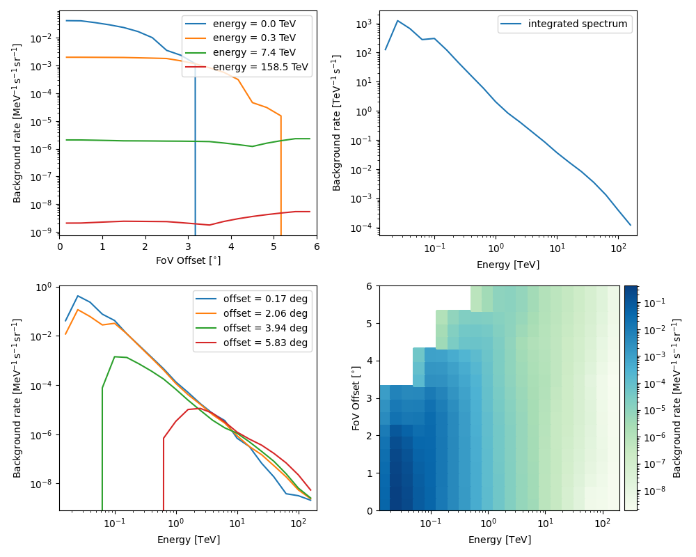

Note
Go to the end to download the full example code or to run this example in your browser via Binder
CTA with Gammapy#
Access and inspect CTA data and instrument response functions (IRFs) using Gammapy.
Introduction#
The Cherenkov Telescope Array (CTA) is the next generation ground-based observatory for gamma-ray astronomy. Gammapy is the core library for the Cherenkov Telescope Array (CTA) science tools (2017ICRC…35..766D and CTAO Press Release).
CTA will start taking data in the coming years. For now, to learn how to analyse CTA data and to use Gammapy, if you are a member of the CTA consortium, you can use the simulated dataset from the CTA first data challenge which ran in 2017 and 2018.
https://forge.in2p3.fr/projects/data-challenge-1-dc-1/wiki (CTA internal)
Gammapy fully supports the FITS data formats (events, IRFs) used in CTA 1DC. The XML sky model format is not supported, but are also not needed to analyse the data, you have to specify your model via the Gammapy YAML model format, or Python code, as shown below.
You can use Gammapy to simulate CTA data and evaluate CTA performance using the CTA response files available here:
The current FITS format CTA-Performance-prod3b-v2-FITS.tar is fully
supported by Gammapy, as shown below.
Tutorial overview#
This notebook shows how to access CTA data and instrument response functions (IRFs) using Gammapy, and gives some examples how to quick look the content of CTA files, especially to see the shape of CTA IRFs.
At the end of the notebooks, we give several links to other tutorial notebooks that show how to simulate CTA data and how to evaluate CTA observability and sensitivity, or how to analyse CTA data.
Note that the FITS data and IRF format currently used by CTA is the one documented at https://gamma-astro-data-formats.readthedocs.io/, and is also used by H.E.S.S. and other imaging atmospheric Cherenkov telescopes (IACTs). So if you see other Gammapy tutorials using e.g. H.E.S.S. example data, know that they also apply to CTA, all you have to do is to change the loaded data or IRFs to CTA.
Setup#
import os
from pathlib import Path
from astropy import units as u
# %matplotlib inline
import matplotlib.pyplot as plt
from IPython.display import display
from gammapy.data import DataStore, EventList
from gammapy.irf import EffectiveAreaTable2D, load_irf_dict_from_file
Check setup#
from gammapy.utils.check import check_tutorials_setup
check_tutorials_setup()
System:
python_executable : /home/runner/work/gammapy-docs/gammapy-docs/gammapy/.tox/build_docs/bin/python
python_version : 3.9.18
machine : x86_64
system : Linux
Gammapy package:
version : 1.2.dev549+g2cd708052
path : /home/runner/work/gammapy-docs/gammapy-docs/gammapy/.tox/build_docs/lib/python3.9/site-packages/gammapy
Other packages:
numpy : 1.26.0
scipy : 1.11.2
astropy : 5.2.2
regions : 0.7
click : 8.1.7
yaml : 6.0.1
IPython : 8.15.0
jupyterlab : not installed
matplotlib : 3.8.0
pandas : not installed
healpy : 1.16.5
iminuit : 2.24.0
sherpa : 4.15.1
naima : 0.10.0
emcee : 3.1.4
corner : 2.2.2
ray : 2.7.0
Gammapy environment variables:
GAMMAPY_DATA : /home/runner/work/gammapy-docs/gammapy-docs/gammapy-datasets/dev
CTA 1DC#
The CTA first data challenge (1DC) ran in 2017 and 2018. It is described in detail here and a description of the data and how to download it is here.
You should download caldb.tar.gz (1.2 MB), models.tar.gz (0.9
GB), index.tar.gz (0.5 MB), as well as optionally the simulated
survey data you are interested in: Galactic plane survey gps.tar.gz
(8.3 GB), Galactic center gc.tar.gz (4.4 MB), Extragalactic survey
egal.tar.gz (2.5 GB), AGN monitoring agn.wobble.tar.gz (4.7 GB).
After download, follow the instructions how to untar the files, and
set a CTADATA environment variable to point to the data.
For convenience, since the 1DC data files are large, and not publicly
available to anyone, we have taken a tiny subset of the CTA 1DC data,
four observations with the southern array from the GPS survey, pointing
near the Galactic center, and included them at $GAMMAPY_DATA/cta-1dc
which you get via gammapy download datasets.
Files#
Next we will show a quick overview of the files and how to load them, and some quick look plots showing the shape of the CTA IRFs. How to do CTA simulations and analyses is shown in other tutorials, see links at the end of this notebook.
# !ls -1 $GAMMAPY_DATA/cta-1dc
# !ls -1 $GAMMAPY_DATA/cta-1dc/data/baseline/gps
# !ls -1 $GAMMAPY_DATA/cta-1dc/caldb/data/cta/1dc/bcf/South_z20_50h
# !ls -1 $GAMMAPY_DATA/cta-1dc/index/gps
The access to the IRFs files requires to define a CALDB environment
variable. We are going to define it only for this notebook so it won’t
overwrite the one you may have already defined.
os.environ["CALDB"] = os.environ["GAMMAPY_DATA"] + "/cta-1dc/caldb"
Datastore#
You can use the DataStore to load via the index files
data_store = DataStore.from_dir("$GAMMAPY_DATA/cta-1dc/index/gps")
print(data_store)
Data store:
HDU index table:
BASE_DIR: /home/runner/work/gammapy-docs/gammapy-docs/gammapy-datasets/dev/cta-1dc/index/gps
Rows: 24
OBS_ID: 110380 -- 111630
HDU_TYPE: ['aeff', 'bkg', 'edisp', 'events', 'gti', 'psf']
HDU_CLASS: ['aeff_2d', 'bkg_3d', 'edisp_2d', 'events', 'gti', 'psf_3gauss']
Observation table:
Observatory name: 'CTA first data challenge (1DC)'
Number of observations: 4
If you can’t download the index files, or got errors related to the data
access using them, you can generate the DataStore directly from the
event files.
path = Path(os.environ["GAMMAPY_DATA"]) / "cta-1dc/data"
paths = list(path.rglob("*.fits"))
data_store = DataStore.from_events_files(paths)
print(data_store)
data_store.obs_table[["OBS_ID", "GLON_PNT", "GLAT_PNT", "IRF"]]
observation = data_store.obs(110380)
print(observation)
Data store:
HDU index table:
BASE_DIR: .
Rows: 24
OBS_ID: 110380 -- 111630
HDU_TYPE: ['aeff', 'bkg', 'edisp', 'events', 'gti', 'psf']
HDU_CLASS: ['aeff_2d', 'bkg_3d', 'edisp_2d', 'events', 'gti', 'psf_3gauss']
Observation table:
Observatory name: 'N/A'
Number of observations: 4
Observation
obs id : 110380
tstart : 59235.50
tstop : 59235.52
duration : 1800.00 s
pointing (icrs) : 267.7 deg, -29.6 deg
deadtime fraction : 2.0%
Events#
We can load events data via the data store and observation, or
equivalently via the EventList class by specifying the
EVENTS filename.
The quick-look events.peek() plot below shows that CTA has a field
of view of a few degrees, and two energy thresholds, one significantly
below 100 GeV where the CTA large-size telescopes (LSTs) detect events,
and a second one near 100 GeV where the mid-sized telescopes (MSTs)
start to detect events.
Note that most events are “hadronic background” due to cosmic ray
showers in the atmosphere that pass the gamma-hadron selection cuts for
this analysis configuration. Since this is simulated data, column
MC_ID is available that gives an emission component identifier code,
and the EVENTS header in events.table.meta can be used to look up
which MC_ID corresponds to which emission component.
Events can be accessed from the observation object like:
Or read directly from an event file:
events = EventList.read(
"$GAMMAPY_DATA/cta-1dc/data/baseline/gps/gps_baseline_110380.fits"
)
Here we print the data from the first 5 events listed in the table:
display(events.table[:5])
EVENT_ID TIME RA DEC ... DETX DETY MC_ID
s deg deg ... deg deg
-------- ----------------- ---------- ---------- ... ---------- ---------- -----
1 664502403.0454683 -92.63541 -30.514854 ... -0.9077294 -0.2727693 2
2 664502405.2579999 -92.64103 -28.262728 ... 1.3443842 -0.2838398 2
3 664502408.8205513 -93.20372 -28.599625 ... 1.0049409 -0.7769775 2
4 664502409.0143764 -94.03383 -29.269627 ... 0.32684833 -1.496021 2
5 664502414.8090746 -93.330505 -30.319725 ... -0.716062 -0.8733348 2
And show a summary plot:
events.peek()
plt.show()

IRFs#
The CTA instrument response functions (IRFs) are given as FITS files in
the caldb folder, the following IRFs are available:
effective area
energy dispersion
point spread function
background
Notes:
The IRFs contain the energy and offset dependence of the CTA response
CTA 1DC was based on an early version of the CTA FITS responses produced in 2017, improvements have been made since.
The point spread function was approximated by a Gaussian shape
The background is from hadronic and electron air shower events that pass CTA selection cuts. It was given as a function of field of view coordinates, although it is radially symmetric.
The energy dispersion in CTA 1DC is noisy at low energy, leading to unreliable spectral points for some analyses.
The CTA 1DC response files have the first node at field of view offset 0.5 deg, so to get the on-axis response at offset 0 deg, Gammapy has to extrapolate. Furthermore, because diffuse gamma-rays in the FOV were used to derive the IRFs, and the solid angle at small FOV offset circles is small, the IRFs at the center of the FOV are somewhat noisy. This leads to unstable analysis and simulation issues when using the DC1 IRFs for some analyses.
print(observation.aeff)
irf_filename = (
"$GAMMAPY_DATA/cta-1dc/caldb/data/cta/1dc/bcf/South_z20_50h/irf_file.fits"
)
irfs = load_irf_dict_from_file(irf_filename)
print(irfs)
EffectiveAreaTable2D
--------------------
axes : ['energy_true', 'offset']
shape : (42, 6)
ndim : 2
unit : m2
dtype : >f4
/home/runner/work/gammapy-docs/gammapy-docs/gammapy/.tox/build_docs/lib/python3.9/site-packages/astropy/units/core.py:2097: UnitsWarning: '1/s/MeV/sr' did not parse as fits unit: Numeric factor not supported by FITS If this is meant to be a custom unit, define it with 'u.def_unit'. To have it recognized inside a file reader or other code, enable it with 'u.add_enabled_units'. For details, see https://docs.astropy.org/en/latest/units/combining_and_defining.html
warnings.warn(msg, UnitsWarning)
{'aeff': <gammapy.irf.effective_area.EffectiveAreaTable2D object at 0x7f4d4929be50>, 'psf': <gammapy.irf.psf.parametric.EnergyDependentMultiGaussPSF object at 0x7f4d48faf5e0>, 'edisp': <gammapy.irf.edisp.core.EnergyDispersion2D object at 0x7f4d48fb8cd0>, 'bkg': <gammapy.irf.background.Background3D object at 0x7f4d48f889a0>}
Effective area#
# Equivalent alternative way to load IRFs directly
aeff = EffectiveAreaTable2D.read(irf_filename, hdu="EFFECTIVE AREA")
print(aeff)
irfs["aeff"].peek()
plt.show()
# What is the on-axis effective area at 10 TeV?
print(aeff.evaluate(energy_true="10 TeV", offset="0 deg").to("km2"))

EffectiveAreaTable2D
--------------------
axes : ['energy_true', 'offset']
shape : (42, 6)
ndim : 2
unit : m2
dtype : >f4
3.783587001383003 km2
Energy dispersion#

Point spread function#

Background#
The background is given as a rate in units MeV-1 s-1 sr-1.
1.2053315944536949e-05 1 / (MeV s sr)
To visualise the background at particular energies:
Source models#
The 1DC sky model is distributed as a set of XML files, which in turn link to a ton of other FITS and text files. Gammapy doesn’t support this XML model file format. We are currently developing a YAML based format that improves upon the XML format, to be easier to write and read, add relevant information (units for physical quantities), and omit useless information (e.g. parameter scales in addition to values).
If you must or want to read the XML model files, you can use
e.g. ElementTree
from the Python standard library, or
xmltodict if you
pip install xmltodict. Here’s an example how to load the information
for a given source, and to convert it into the sky model format Gammapy
understands.
# This is what the XML file looks like
# !tail -n 20 $CTADATA/models/models_gps.xml
# TODO: write this example!
# Read XML file and access spectrum parameters
# from gammapy.extern import xmltodict
# filename = os.path.join(os.environ["CTADATA"], "models/models_gps.xml")
# data = xmltodict.parse(open(filename).read())
# data = data["source_library"]["source"][-1]
# data = data["spectrum"]["parameter"]
# data
# Create a spectral model the the right units
# from astropy import units as u
# from gammapy.modeling.models import PowerLawSpectralModel
# par_to_val = lambda par: float(par["@value"]) * float(par["@scale"])
# spec = PowerLawSpectralModel(
# amplitude=par_to_val(data[0]) * u.Unit("cm-2 s-1 MeV-1"),
# index=par_to_val(data[1]),
# reference=par_to_val(data[2]) * u.Unit("MeV"),
# )
# print(spec)
CTA performance files#
CTA 1DC is useful to learn how to analyse CTA data. But to do simulations and studies for CTA now, you should get the most recent CTA IRFs in FITS format from https://www.cta-observatory.org/science/cta-performance/
If you want to run the download and examples in the next code cells, remove the # to uncomment.
# !curl -O https://www.cta-observatory.org/wp-content/uploads/2019/04/CTA-Performance-prod3b-v2-FITS.tar.gz
# !tar xf CTA-Performance-prod3b-v2-FITS.tar.gz
# !ls caldb/data/cta/prod3b-v2/bcf
# irfs1 = load_irf_dict_from_file("caldb/data/cta/prod3b-v2/bcf/South_z20_50h/irf_file.fits")
# irfs1["aeff"].plot_energy_dependence()
# irfs2 = load_irf_dict_from_file("caldb/data/cta/prod3b-v2/bcf/South_z40_50h/irf_file.fits")
# irfs2["aeff"].plot_energy_dependence()
Exercises#
Load the EVENTS file for
obs_id=111159as aEventListobject.Use
tableto find the energy, sky coordinate and time of the highest-energy event.Use
pointing_radecto find the pointing position of this observation, and useastropy.coordinates.SkyCoordmethods to find the field of view offset of the highest-energy event.What is the effective area and PSF 68% containment radius of CTA at 1 TeV for the
South_z20_50hconfiguration used for the CTA 1DC simulation?Get the latest CTA FITS performance files from https://www.cta-observatory.org/science/cta-performance/ and run the code example above. Make an effective area ratio plot of 40 deg zenith versus 20 deg zenith for the
South_z40_50handSouth_z20_50hconfigurations.
# start typing here ...
Next steps#
Learn how to analyse data with High level interface and Low level API or any other Gammapy analysis tutorial.
Learn how to evaluate CTA observability and sensitivity with 3D map simulation, 1D spectrum simulation or Point source sensitivity.